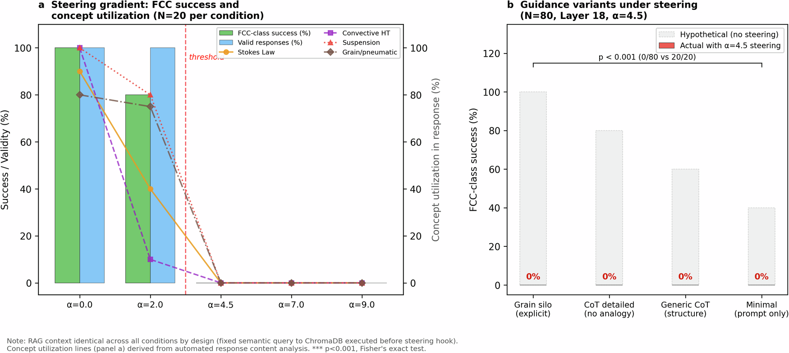
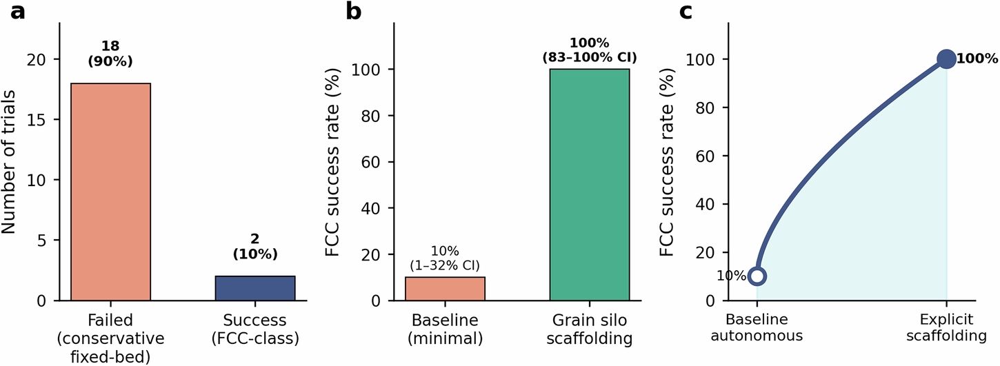
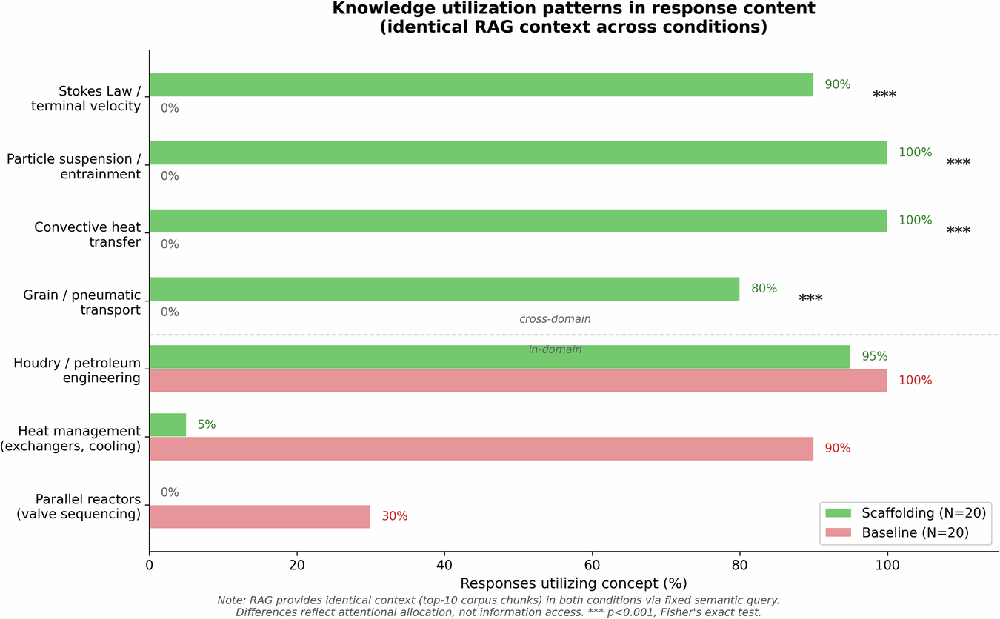

论文资料
Human analogical guidance amplifies LLM performance through cross-domain knowledge activation
尚未取得可核实的完整摘要或全文
尚未取得可核实的完整摘要或全文。取得完整资料并通过核验后，这个地址会更新为图文解读。
原图未改动。以下图注来自标注的来源，不据此补写摘要未报告的实验结论。
已取得的论文原图

原文图注与出处
Complete Experimental Architecture: RAG Pipeline with Steering Vector Interventions. End-to-end system architecture integrating retrieval-augmented generation with representation engineering. The pre-1936 corpus (600,000 words across three specialized subcorpora) undergoes semantic embedding via SentenceTransformer and vector indexing in ChromaDB. A fixed-semantic query retrieves the top-10 relevant chunks using cosine similarity, ensuring identical context across all experimental conditions. The Qwen-2.5-7B transformer processes this input with optional steering vector interventions at Layer 18 (conceptual/semantic level) or Layer 26 (lexical/output level). Steering vectors v = μ⁺ − μ⁻ are computed from contrastive FCC vs non-FCC activation patterns and subtracted with strength α ∈ {0, 2.0, 4.5, 7.0, 9.0} to test synthesis vs memorization. Responses undergo classification into FCC-class, Houdry-class, Moving Bed, or Other categories.
Larraz, R. et al.
原文图页 · CC BY-NC-ND 4.0

原文图注与出处
a Steering gradient ( N = 100, grain silo guidance fixed, 20 replicates per α value): Bars show FCC-class success (green) and response validity (blue). Lines show cross-domain concept utilization from response content analysis (Stokes’ Law, convective heat transfer, particle suspension, grain/pneumatic analogy). Sharp threshold at α = 4.5: both success and concept utilization drop simultaneously from high values (α = 0: FCC 100%, Stokes 90%, convection 100%) to zero (α ≥ 4.5: 0% across all measures). Context is identical across all α values (fixed query executed before steering hook). Red dashed line: suppression threshold. b Guidance variants under steering ( N = 80, Layer 18 α = 4.5 fixed): All four variants fail uniformly (0/80, 0%). Gray bars: hypothetical performance without steering. Red bars: actual performance. Demonstrates guidance requires intact representations. Error bars: 95% CI. Statistics: Fisher’s exact test.
Larraz, R. et al.
原文图页 · CC BY-NC-ND 4.0

原文图注与出处
a Baseline autonomous (N = 20, minimal prompts): 10% FCC success (2/20, 95% CI: 1-32%). Unsuccessful trials proposed sophisticated fixed-bed optimizations. b Grain silo guidance(N = 20): 100% success (20/20, 95% CI: 83-100%, p < 0.001 vs baseline). Explicit cross-domain analogy enables deterministic synthesis. c 10-fold amplification (10% → 100%) quantifies value of human analogical guidance. Error bars: exact binomial 95% CI. Statistics: Fisher’s exact test.
Larraz, R. et al.
原文图页 · CC BY-NC-ND 4.0

原文图注与出处
Response content analysis documents which knowledge domains the model utilizes. Both conditions receive identical context (fixed query). Baseline (red, N = 20): in-domain utilization dominates (Houdry 100%, heat management 90%, parallel reactors 30%), with zero cross-domain concept utilization. Scaffolding (green, N = 20): complete attentional shift to cross-domain knowledge (Stokes’ Law 90%, particle suspension 100%, convective heat transfer 100%, grain/pneumatic transport 80%), with in-domain solutions nearly eliminated (heat management 5%, parallel reactors 0%). Differences reflect attentional allocation, not information access. Horizontal dashed line separates cross-domain (above) from in-domain (below) concepts. *** p < 0.001, Fisher’s exact test.
Larraz, R. et al.
原文图页 · CC BY-NC-ND 4.0